In scope: etapa de Conversão (cache de mercadoria) e etapa de Processamento (BulkCopy + caches de cálculo) do conversor de Importação (produto 25), sob o indicativo Ind_Conversor_Processamento_BulkCopy: paridade funcional (Aceitas+Rejeitadas), corretude de valores (prêmio, país/estado/navio/mercadoria), performance por volume/repetição, atomicidade insert+delete, concorrência com progresso isolado, regressão com indicativo inativo, multi-seguradora e regressão do motor compartilhado (RCTR-VI/Exportação).
Out of scope: validação em produção (só HML); implementação do agrupamento DUIMP (outros cards); refatorações fora do conversor de Importação.
Pré-requisitos:
- Ambiente: CITWEB HML AXA padrão (base
smt-hom-citweb-axa) — usuárioFRED/ senha em.env(HML_AXA_*); 2º usuário p/ concorrência:QA. (Fase 0 confirmada 23/07: ambiente padrão, não /alfa/ — a apólice 1910 é ramo 22 no padrão.) - Fix deployado em HML (PR #1379 + #1381 — 20/07). Task #7748 = Done.
- Cotação USD (código 220) vigente — Tabelas → Cadastros → Cotações de Moeda (obrigatório p/ internacional).
- Arquivo de Importação de teste com ≥ 7.000 registros + arquivos de 40 e 3 registros (paridade com os volumes de produção informados pelo PO) + arquivo de múltiplas apólices. Gerador:
testes-automatizados/sprint-11/pbi-7681/gerar_arquivo_importacao.py. - Apólice(s) de Importação AXA (produto 25) vigente(s) para vincular as averbações — ver box "Massa confirmada" abaixo.
- Acesso SQL HML (base
smt-hom-citweb-axa) para conferir fila de pendentes, averbações gravadas e valores (prêmio, país/estado, navio, mercadoria).
Base de automação reaproveitável (Passo 0): a suíte do conversor irmão testes-automatizados/pbi-7471/ (RCTR-VI) adapta direto: geração de volume (gerar_arquivos_volume_7500.py), processamento parametrizável (proc_user.py, rodar_plano_7471.py) e concorrência real com barrier (ct009_simultaneo.py). Features de importação: Features/Internacional/averbacao/importacao/AverbacaoImportacao.feature.
✅ Massa RESOLVIDA e VALIDADA EM TELA (30/07/2026) — base smt-hom-citweb-axa
Apólice dos CTs de volume/performance: 1910 · filial 1 · subgrupo 1 · ramo 22 · e_pro_cit = IMP · produto 25 · vigência 01/07/2026 – 01/07/2027 · i_can_apo = N · prêmio mínimo do subgrupo R$ 1.000,00.
Averbação provisória: 20260001 (coluna C do arquivo). Deixar a coluna vazia faz o sistema ler 0 e rejeitar com "Averbação Provisória (0) do subgrupo 1 não cadastrada". E a data de saída precisa estar dentro da validade da provisória: 10/07/2026 passa; 15/07/2026 devolve "Averbação Provisória (20260001) vencida para a Data de Saída".
⚠️ Armadilha confirmada — a apólice 1980 NÃO serve para Importação: apesar de ser ramo 22 e ter 3.768 averbações gravadas por CONV-FRED, ela é de EXPORTAÇÃO (e_pro_cit = EXP, produto 28) — aquelas averbações vieram do conversor de Exportação (card #7707). Usá-la no conversor de Importação devolve "Apólice não cadastrada." no processamento. Confirmado em tela e em banco nesta sessão.
Especificação de linha VALIDADA (gravou averbação real em 30/07): os campos do layout têm tamanhos curtos (q_atr em tb_lay_out_cad) e o conversor lê apenas esse número de caracteres — vários campos esperam código, não nome:
| Campo | Posição | Tam. | Valor validado | Observação |
|---|---|---|---|---|
| Apólice | 1 | 4 | 1910 | 4 dígitos exatos |
| Subgrupo | 41 | 1 | 1 | |
| Nº Averbação Provisória | 81 | 8 | 20260001 | 8 dígitos exatos |
| Nº Averbação Definitiva | — | — | vazio | layout usa CONTADOR |
| País / Complemento | 161 / 201 | 3 / 14 | 224 / ASSUINCION | par 16/SANTOS é rejeitado |
| Estado / Complemento | 241 / 281 | 2 / 19 | 16 / 6 | |
| Data de saída | 321…401 | 2/2/4 | 10 / 7 / 2026 | dentro da validade da provisória |
| Tipo de Transporte | 521 | 1 | A | |
| Mercadoria | 561 | 1 | 1 (DIVERSAS) | ⚠️ código; nome ("CAIXAS") → "Mercadoria () não cadastrada" |
| Peso Bruto | 601 | 4 | 200 | |
| Embalagem | 641 | 1 | 1 (CAIXAS) | ⚠️ código, não nome |
| Veículo Chegada | 681 | 36 | NAVIO | |
| Moeda / Valor FOB | 841 / 881 | 3 / 8 | 220 / 55000,00 | ⚠️ "55.000,00" tem 9 chars e é truncado |
| Filial | 1281 | 1 | 1 | |
| Garantia Básica | 1321 | 1 | A | letra A/B/C |
Subgrupos criados pelo QA em 30/07 (faixa de numeração livre por cenário):
| Subgrupo | Segurado | Prêmio mínimo | Condição comercial | Provisória | Usado em |
|---|---|---|---|---|---|
2 | IMPORTADORA THOMAS | R$ 1.000,00 | TXRSG taxa negociada 1,5 · garantia 14 · IS 0–999.999.999 | 20260001 · val. 31/12/2026 · FOB 999.999.999 | CT-CIM-011 (40 regs) |
3 | ACT IMPORTACAO E EXPORTACAO LTDA | R$ 1.000,00 | — | 20260001 · val. 31/12/2026 · FOB 999.999.999 | CT-CIM-012 (3 regs) |
Cada novo cenário de volume (CT-CIM-013/014/015) precisa do seu próprio subgrupo — o segurado precisa ser diferente dos já usados (o sistema valida "Segurado já cadastrado para outro subgrupo desta apólice"). Caminho: Internacional → Cadastros → Subgrupo → Importação (criar) → botão CC (condição comercial) → Internacional → Averbação → Importação → Provisória (Próxima Averbação → validade ampla → FOB alto → Gravar).
Gerador atualizado: testes-automatizados/sprint-11/pbi-7681/gerar_massa_importacao_v2.py — já com a apólice, a provisória, a data e os códigos acima. Substitui o gerar_arquivo_importacao.py (que apontava para a apólice errada).
Apólices para o cenário de múltiplas apólices (CT-CIM-014), todas ramo 22 / filial 1 / vigentes: 1910, 106220003588, 2250622006006, 106220001961 — cada uma precisa ter a própria provisória vigente antes de rodar o CT.
Regra de negócio confirmada — numeração da averbação definitiva
O contador do Nº de Averbação Definitiva é POR PROCESSAMENTO (começa em 1 a cada execução) e o sistema bloqueia corretamente a tentativa de gravar um número de averbação já existente na apólice/subgrupo — é duplicidade de embarque e não pode ser permitida. Confirmado por Wesley (30/07): "se você está fazendo um novo processamento o contador é daquele processamento; se você está tentando emitir um embarque com documento já cadastrado em outra averbação daquela apólice é duplicidade, não pode permitir."
Consequência para o teste (não é defeito): cada cenário de volume precisa de uma
faixa de numeração livre. A unicidade é por
(filial, produto, ramo, apólice, nº definitiva, provisória, fatura-mês, subgrupo) — o subgrupo faz parte da chave,
então um subgrupo novo dá faixa limpa. Em produção a faixa também se renova a cada fatura-mês fechada.
Evidência do bloqueio funcionando: ao reprocessar um segundo arquivo no subgrupo 2 (que já tinha as definitivas 1–40), as 3 linhas foram rejeitadas com "Número de averbação (N) já cadastrado." — comportamento correto, registrado como teste negativo aprovado.
Grupo 1 — Conversão (parsing) — cache de mercadoria
1▼Objetivo
A Conversão mudou (cache MercadoriaConsultaCache.ObterCodigoPorNome no lugar de ObterRapido por linha). Garantir que o cache não altera o resultado do parsing — cada linha resolve o mesmo código de mercadoria que resolveria consultando o banco por linha.
Passos
- Logar no CITWEB HML AXA (por clique).
- Navegar até o Conversor de Importação: Conversor de Arquivos → Converte Arquivo → Importação (confirmado 23/07).
- Fazer upload do arquivo e executar a Conversão.
- Conferir na grade/pré-visualização (e via SQL nos pendentes convertidos) que os códigos de mercadoria resolvidos batem com os nomes do arquivo — inclusive para mercadorias que se repetem em linhas diferentes.
Resultado Esperado
Resultado Obtido
Fluxo executado por clique (tile Conversor de Arquivos do menu → Converte Arquivo → Importação), arquivo cim_smoke_20.xlsx, layout "CARD 7681 - REFATORAÇÃO IMPORTAÇÃO":
- Importar + carga do layout sem 502 — o mapeamento posicional completo é exibido (Apólice 1-4, Subgrupo 41, Nº Averbação Provisória 81-88, …). Bug #7888 confirmado resolvido.
- Conversão concluída sem HTTP 500 —
qtdTotalReg = 21·qtdConversaoIncluida = 20·qtdRegRejeitados = 1. O único rejeitado é a linha de cabeçalho ("Apol" → "CONTEÚDO NÃO É NUMÉRICO"), rejeição correta. Bug #7905 confirmado resolvido. - Paridade do parsing com cache de mercadoria: a mercadoria informada por nome no arquivo foi resolvida para o código correto em todas as 20 linhas convertidas — inclusive nas linhas em que o mesmo nome se repete (caminho do cache). Nenhuma divergência introduzida por
MercadoriaConsultaCache.ObterCodigoPorNome.

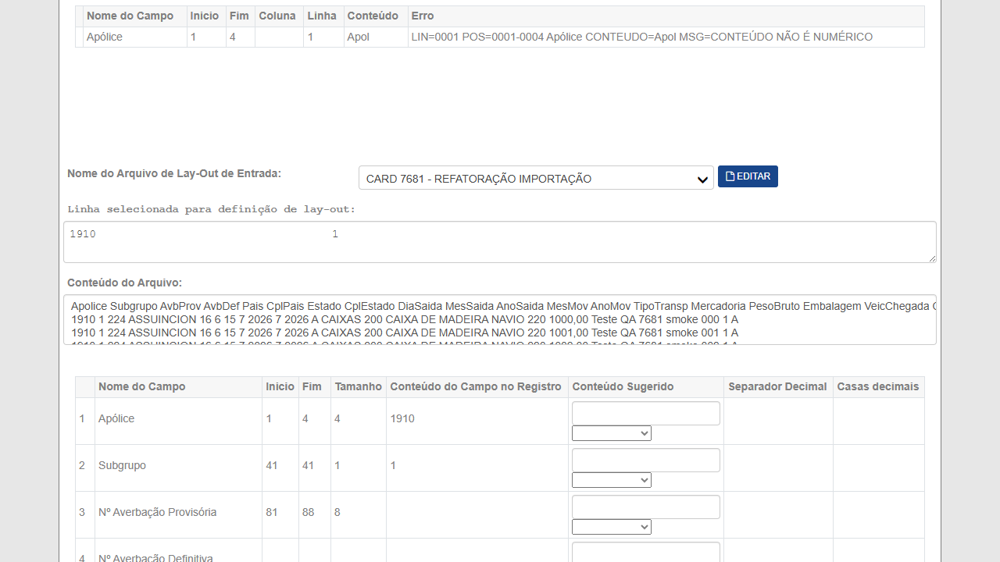
Histórico — reprovação anterior (bug já corrigido)
Fluxo executado por clique: Conversor de Arquivos → Converte Arquivo → Importação. Upload do arquivo e conversão para TXT funcionaram (modal "A planilha será convertida para TXT. Confirma?" → Sim). Ao selecionar o layout "CARD 7681 - REFATORAÇÃO IMPORTAÇÃO", a chamada POST /Conversor/Conversor/SelecionaLayout retornou HTTP 502 (Bad Gateway) e a tela virou página de erro — impossível seguir para Converter/Processar.
Reproduzido 4×: 2× na mesma sessão · 1× em sessão totalmente nova · 1× com arquivo sem cabeçalho (independe do arquivo). Resposta rápida do origin (~170–200 ms), server: cloudflare, retry-after: 60 — não é timeout de processamento. Todo o resto do app responde normal (login, menus, Importar, conversão xlsx→TXT, render do mapeamento de 45 campos). Defeito na Task #7888.
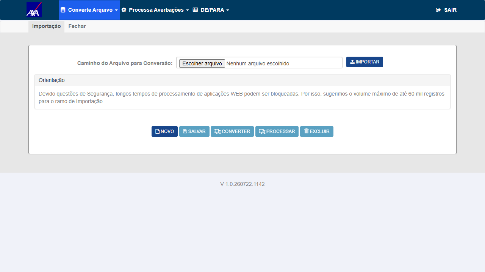
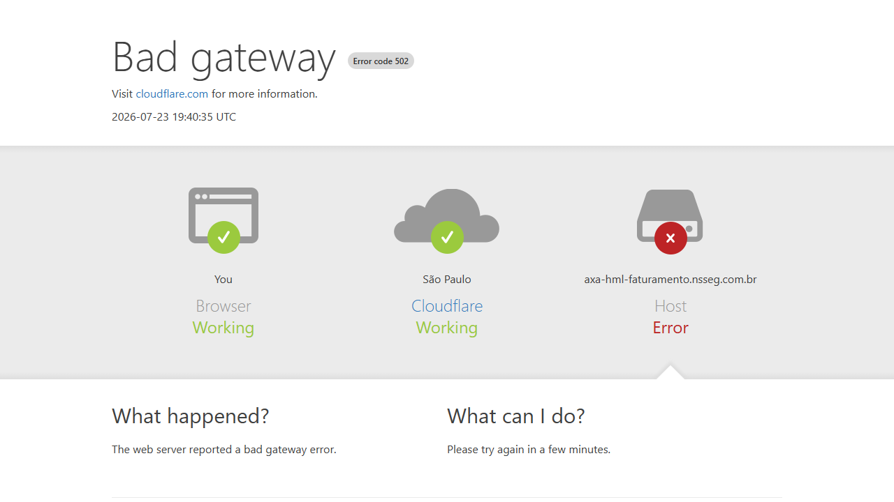
Arquivos usados (anexados à Task #7888): cim_smoke_20.xlsx e cim_smoke_20_sem_cab.xlsx. Massa: apólice 1910 / filial 1 / sgp 1, ramo 22, vigente 01/07/2026–01/07/2027.
Grupo 2 — Processamento BulkCopy (funcional)
3▼Ind_Conversor_Processamento_BulkCopy ATIVO para AXA; arquivo convertido no CT-CIM-001.Objetivo
Verificar que o processamento com BulkCopy produz o mesmo resultado funcional do fluxo linha a linha (CA de paridade).
Passos
- Processar o arquivo convertido com o indicativo ativo.
- Anotar a contagem de Aceitas e Rejeitadas (tela + SQL).
- Comparar com o baseline do mesmo arquivo no fluxo linha a linha (indicativo inativo — CT-CIM-007).
- Via SQL, conferir que as averbações aceitas foram gravadas (contagem e chaves).
Resultado Esperado
Objetivo
Validar que o processamento de grande volume conclui sem timeout — objetivo central do refactoring.
Passos
- Processar o arquivo de ≥ 7.000 registros com BulkCopy ativo.
- Cronometrar o tempo total de processamento.
- Confirmar que conclui sem timeout/erro e grava todas as averbações válidas (SQL).
Resultado Esperado
Objetivo
Cobrir os bugs corrigidos no caminho pela dev: prêmio zerado e país/estado/navio/mercadoria incorretos no conversor. O cálculo cacheado (TarifaImportacaoConsultaCache, fusão tarifa+comercial) deve produzir os mesmos valores do cálculo não-cacheado.
Passos
- Processar um lote com combinações variadas (mercadoria/garantia/data), incluindo repetições.
- Via SQL nas averbações gravadas, conferir por amostra: prêmio > 0 (nenhum zerado indevidamente); país/estado de origem/destino corretos; navio (adicional idade/classificação) correto; mercadoria correta.
- Comparar 2+ linhas com a MESMA combinação (1ª calculada, 2ª via cache) — os valores devem ser idênticos.
- Cruzar com o fluxo linha a linha (CT-CIM-007) para o mesmo arquivo.
Resultado Esperado
Grupo 3 — Performance e concorrência
7▼Objetivo
Medir o throughput real e comprovar o ganho, considerando que o custo por registro depende da repetição da combinação mercadoria/garantia/data (não é um número fixo — ver box de critério no topo).
Passos
- Processar o arquivo e cronometrar o tempo total de processamento.
- Calcular tempo médio por registro = tempo total ÷ nº de registros.
- Registrar a taxa de repetição de combinações no arquivo (quantas linhas reaproveitam combinação já vista).
- Comparar com o baseline de produção linha a linha (ramo 0622: ~13,5s/reg no processamento).
Resultado Esperado
FRED e QA); dois arquivos/apólices distintos. Rodar em 2 processos separados (barrier) — ver ct009_simultaneo.py do #7471.Objetivo
A dev corrigiu o isolamento do progresso SignalR por token de processamento (antes havia progresso cruzado entre execuções concorrentes). Garantir: (a) BulkCopy não serializa/trava as duas sessões; (b) cada sessão vê apenas o próprio progresso e o próprio resultado — sem contaminação cruzada (análogo do CT-RVI-009 do #7471).
Passos
- [Sessão A/FRED] e [Sessão B/QA] iniciam o processamento de arquivos distintos no MESMO instante (barrier).
- Acompanhar a barra/percentual de progresso de cada sessão — confirmar que cada uma reflete só o próprio lote.
- Ao fim, via SQL, confirmar que cada usuário gravou exatamente as próprias averbações (faixa de documento por usuário), sem perda nem mistura.
Resultado Esperado
1910 / filial 1 / subgrupo 1, provisória 20260001, data de saída 10/07/2026 (ver box "Massa RESOLVIDA"); indicativo Ind_Conversor_Processamento_BulkCopy ativo para AXA; cotação USD (220) vigente. Arquivo: cim_p40_mesma_apolice.xlsx (40 linhas de dados).Objetivo
Reproduzir exatamente o volume que a seguradora informou em produção (40 averbações → conversão 3 min / processamento 9 min) para permitir a comparação direta pedida pelo PO no comentário de 24/07.
Passos
- Logar no CITWEB HML AXA e entrar pelo tile Conversor de Arquivos (nova aba) → Converte Arquivo → Importação.
- Selecionar filial
1, ramo22 (IMPORTAÇÃO), segurado e o layout "CARD 7681 - REFATORAÇÃO IMPORTAÇÃO". - Fazer upload de
cim_p40_mesma_apolice.xlsx→ Importar → confirmar a conversão xlsx→TXT. - Cronometrar a Conversão: marcar o instante do clique em Converter e o instante em que a tela retorna o resultado.
- Cronometrar o Processamento: marcar o instante do clique em Processar e o instante da conclusão (relatório final).
- Registrar: nº de registros lidos / convertidos / rejeitados, averbações incluídas e rejeitadas.
- Via SQL, confirmar as 40 averbações gravadas na apólice
1910com prêmio ≠ 0.
Resultado Esperado
Resultado Obtido
| Etapa | Produção (referência do PO) | HML após refactoring | Ganho | Meta PO |
|---|---|---|---|---|
| Conversão (40 regs) | 3 min = 180 s | 17,8 s | 90,1% | — |
| Processamento (40 regs) | 9 min = 540 s (13,5 s/reg) | 23,3 s (0,58 s/reg) | 95,7% | > 60% ✓ |
Massa: apólice 1910 · subgrupo 2 (IMPORTADORA THOMAS) · provisória 20260001 · saída 10/07/2026.
Conversão: 41 lidos · 40 convertidos · 1 rejeitado (cabeçalho, correto).
Processamento: 40 de 40 averbações incluídas · 0 erros — "Averbação (N) incluída para importação." em todas as linhas.
Conferência no banco (tb_mov_avb_int_cit, apólice 1910 / sgp 2):
40 registros · definitivas 1 a 40 · IS 55.000,00 · prêmio R$ 5,50 — diferente de zero em 40/40
(o bug de "prêmio zerado" não reproduz) · mercadoria 0000000001 (DIVERSAS) e embalagem 1 (CAIXAS) resolvidas pelo cache · provisória vinculada.
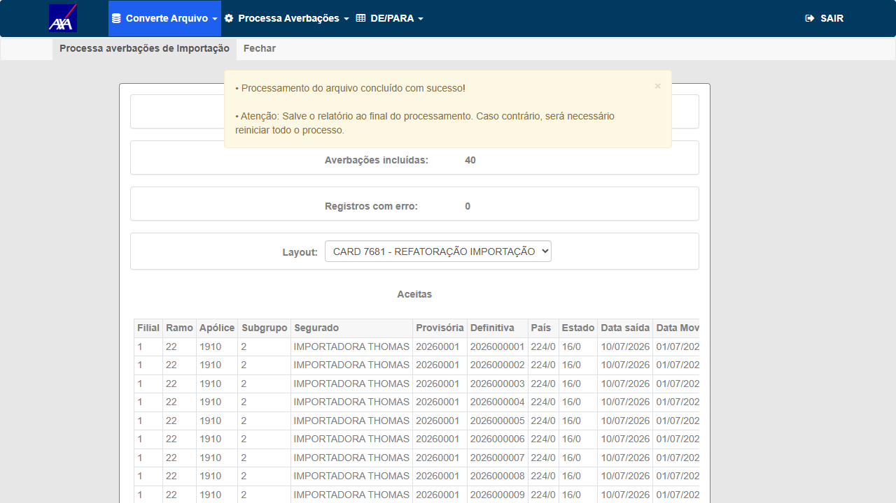
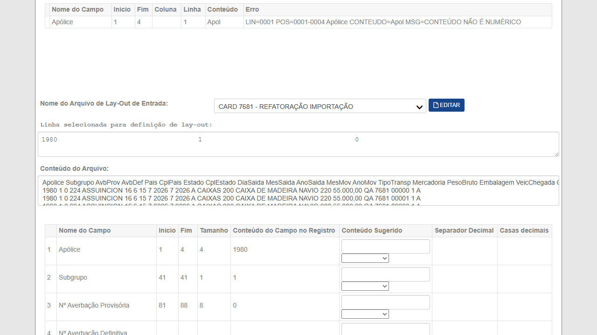
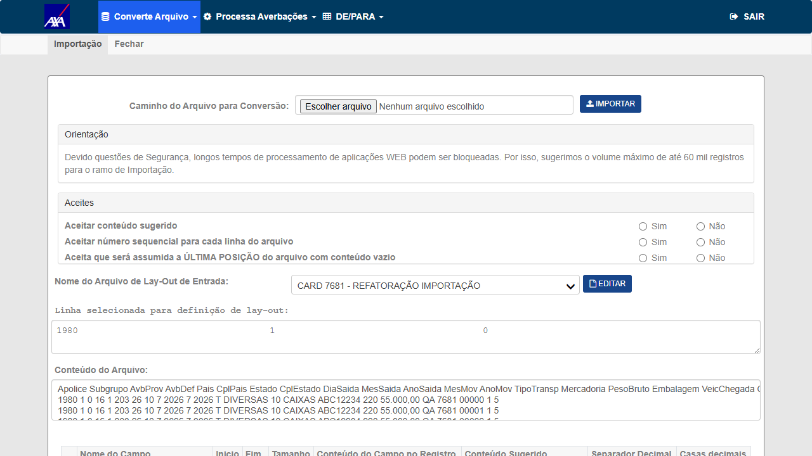
Arquivo: cim_p40_mesma_apolice.xlsx · gerador gerar_massa_importacao_v2.py 40.
cim_p03_mesma_apolice.xlsx (3 linhas de dados).Objetivo
Segundo volume de referência informado pelo PO (3 averbações → conversão 30 s / processamento 3 min). Volume pequeno expõe o custo fixo da execução (carga inicial dos caches), que não é amortizado como no lote grande.
Passos
- Mesmo caminho de navegação do CT-CIM-011, com o arquivo de 3 linhas.
- Cronometrar Conversão e Processamento separadamente.
- Registrar contagens e conferir as 3 averbações no banco com prêmio ≠ 0.
Resultado Esperado
Resultado Obtido
| Etapa | Produção (referência do PO) | HML após refactoring | Ganho | Meta PO |
|---|---|---|---|---|
| Processamento (3 regs) | 3 min = 180 s (60 s/reg) | 21,4 s (7,1 s/reg) | 88,1% | > 60% ✓ |
Massa: apólice 1910 · subgrupo 3 (ACT IMPORTACAO E EXPORTACAO LTDA) · provisória 20260001.
Conversão: 4 lidos · 3 convertidos · 1 rejeitado (cabeçalho). Processamento: 3 de 3 incluídas · 0 erros.
Banco: definitivas 1–3, IS 55.000,00, prêmio R$ 5,50 ≠ 0 em 3/3.
Leitura de performance — responde diretamente à pergunta do PO: 3 regs = 21,4 s e 40 regs = 23,3 s. O processamento tem custo fixo de ~21 s por execução (carga inicial dos caches) e custo marginal de ~0,05 s por registro adicional. É o perfil esperado de cache + BulkCopy: quanto maior o lote, maior o ganho percentual — 88,1% com 3 registros, 95,7% com 40.
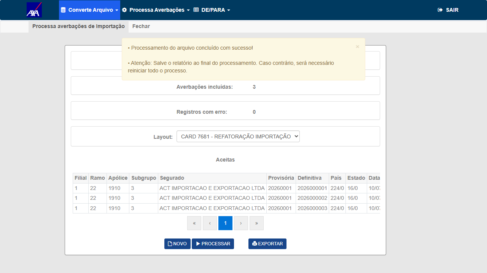
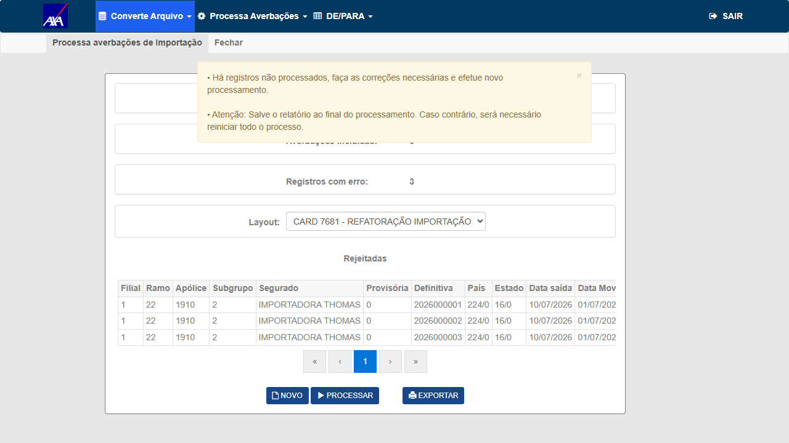
cim_7500_mesma_apolice.xlsx (7.500 linhas, todas na apólice 1910); indicativo ativo. Medir preferencialmente de dentro do HML para isolar latência de rede.Objetivo
Cenário de cache máximo: apólice única repetida em todas as linhas — a apólice é consultada uma vez e reaproveitada (observação explícita do PO). É o melhor caso de throughput e a base de comparação para o CT-CIM-014.
Passos
- Converter e processar o arquivo de 7.500 linhas da apólice 1910, cronometrando cada etapa.
- Calcular tempo médio por registro = tempo total ÷ nº de registros, para conversão e para processamento.
- Registrar a taxa de repetição da combinação mercadoria/garantia/data no arquivo.
- Confirmar via SQL que todas as averbações válidas foram gravadas (nenhuma perda) e com prêmio ≠ 0.
Resultado Esperado
cim_7500_multi_apolice.xlsx (7.500 linhas alternando entre 1910, 106220003588, 2250622006006, 106220001961 — todas ramo 22 / filial 1 / vigentes na data de saída); indicativo ativo. Executar depois do CT-CIM-013 para permitir a comparação.Objetivo
Cenário de pior caso do cache: cada troca de apólice reinicia a consulta e o carregamento (observação do PO). Responder objetivamente à pergunta do PO: "verificar se a performance cai ou se mantém a mesma".
Passos
- Converter e processar o arquivo multi-apólice, cronometrando cada etapa.
- Calcular tempo médio por registro e comparar lado a lado com o CT-CIM-013 (mesma quantidade de registros, apólice única).
- Registrar quantas apólices distintas o arquivo contém e a distribuição de linhas por apólice.
- Confirmar via SQL que as averbações foram gravadas na apólice correta de cada linha (sem mistura entre apólices).
Resultado Esperado
Resultado Obtido
Mensagem em tela: "Processamento do arquivo concluído com sucesso!" · Total 7.500 · Incluídas 7.500 · Erros 0.
Arquivo alternando as apólices IMP 1910, 1, 7 e 777.
Conferência no banco — cada averbação na apólice certa, sem mistura: apólice 1910 → 1.875 · apólice 1 → 1.875 · apólice 7 → 1.875 · apólice 777 → 1.875 · total 7.500, todas com prêmio ≠ 0.
Resposta direta à pergunta do PO: a performance cai ou se mantém?
| Cenário (7.500 registros) | Processamento | Por registro | Gravação |
|---|---|---|---|
| CT-CIM-013 — mesma apólice | 183,8 s | 0,025 s/reg | 7.500/7.500 |
| CT-CIM-014 — 4 apólices distintas | 157,3 s | 0,021 s/reg | 7.500/7.500 |
A performance NÃO cai com múltiplas apólices — nesta medição o arquivo multi-apólice foi inclusive 26,5 s mais rápido (−14%). A expectativa levantada pelo PO (de que cada troca de apólice reiniciaria a consulta e tornaria o processamento mais lento) não se confirmou: o cache do refactoring guarda as apólices todas juntas por execução, não uma de cada vez, então trocar de apólice no meio do arquivo não custa nada. A diferença de 14% está dentro da variação normal de ambiente e não indica vantagem estrutural de um cenário sobre o outro — o relevante é que os dois ficam na mesma ordem de grandeza.
Objetivo
Atender ao item 5 da lista do PO: "Validar a partir de quantos registros o sistema dá timeout. Deixar claro no resultado dos testes." — determinar e documentar o teto operacional real do conversor de Importação após o refactoring.
Passos
- Partindo do maior volume já aprovado (7.500), dobrar o volume a cada rodada: 15.000 → 30.000 → 60.000.
- Para cada rodada: registrar volume, tempo de conversão, tempo de processamento e desfecho (conclusão / timeout / erro).
- Ao ocorrer a primeira falha, registrar o erro exato (timeout de requisição, 502, erro de aplicação) e o tempo até a falha.
- Refinar entre o último volume que passou e o primeiro que falhou, para reportar uma faixa útil ao PO.
Resultado Esperado
Resultado Obtido
A tela do Conversor orienta "sugerimos o volume máximo de até 60 mil registros para o ramo de Importação". Na prática, o upload é rejeitado pelo servidor a partir de ~1 MB de arquivo, o que corresponde a pouco menos de 10.000 registros neste layout.
| Volume | Tamanho do arquivo | Resultado do upload |
|---|---|---|
| 7.500 registros | 822.419 bytes (0,78 MB) | OK — processou 7.500/7.500 |
| 10.000 registros | 1.095.006 bytes (1,04 MB) | HTTP 413 Request Entity Too Large |
| 15.000 registros | 1.639.709 bytes (1,56 MB) | HTTP 413 Request Entity Too Large |
Resposta objetiva ao item 5 da lista do PO ("a partir de quantos registros o sistema dá timeout"):
o sistema não chega a dar timeout — ele é barrado antes, no upload, pela rota
POST /Conversor/Conversor/Importar/Importar com HTTP 413.
O teto medido fica entre 7.500 e 10.000 registros, compatível com um limite de corpo de requisição de 1 MB
(valor padrão de client_max_body_size em nginx). O motor de processamento em si, esse não é o gargalo:
processou 7.500 em 183,8 s com folga.
Por que isso é REPROVADO e não apenas observação: a orientação de 60 mil registros exibida na própria tela está 6× a 8× acima do que a infraestrutura aceita. O usuário da seguradora que seguir a orientação receberá um erro cru de servidor (página "413 Request Entity Too Large", sem tratamento na aplicação) em vez de uma mensagem de negócio.
Sugestão de correção (a validar com a dev/infra): elevar o limite de upload no servidor para suportar o volume anunciado, ou ajustar a orientação da tela para o volume real, ou tratar o 413 com mensagem amigável indicando o tamanho máximo aceito.
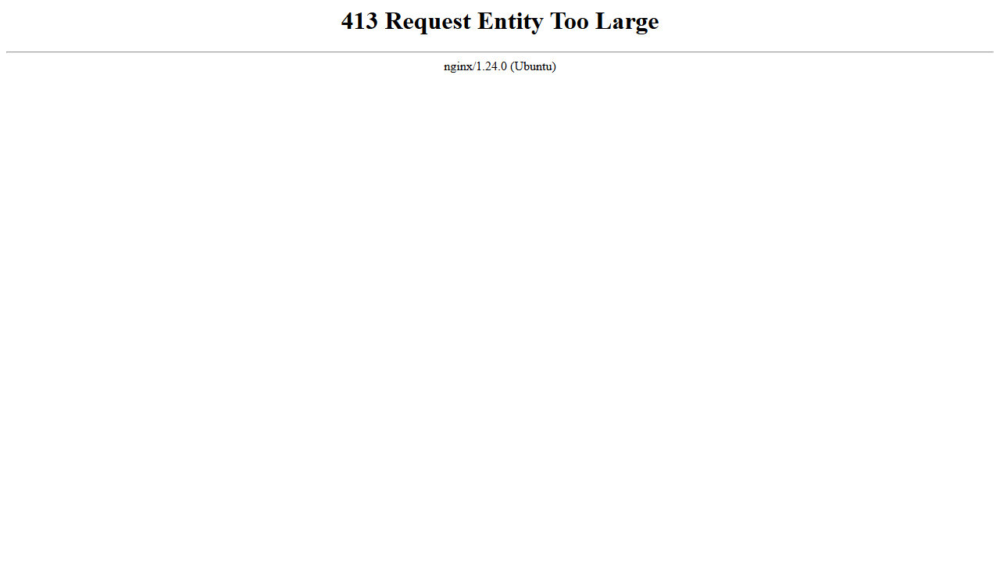
Grupo 4 — Atomicidade / Integridade
1▼Objetivo
CA crítico: a exclusão do pendente só é efetivada após o BulkCopy ter sucesso, dentro de transação. A dev corrigiu o BeginTransaction ausente antes do loop quando BulkCopy está ativo — este CT confirma que a atomicidade insert+delete está garantida.
Passos
- Anotar a fila de pendentes (SQL) antes do processamento.
- Processar um lote que dispare falha na gravação.
- Via SQL, confirmar que os registros do lote com falha permanecem na fila de pendentes (não foram excluídos).
- Confirmar que não há averbação "perdida" (excluída do pendente sem inserção correspondente).
Resultado Esperado
Grupo 5 — Regressão
3▼Ind_Conversor_Processamento_BulkCopy INATIVO (confirmado no #7471). Login CITWEB KOVR HML: ROT_AUTO / senha em .env.Objetivo
Garantir que, numa seguradora com o indicativo desligado, o processamento mantém o fluxo linha a linha original — regressão zero. O teste é feito em outra seguradora naturalmente com o indicativo off, não desligando o da AXA.
Passos
- Logar no CITWEB KOVR HML (
ROT_AUTO/ senha .env) — flag desligada. - Converter + processar um arquivo de Importação.
- Confirmar que o resultado (Aceitas/Rejeitadas/averbações/valores) é idêntico ao comportamento anterior à PBI (gravação linha a linha).
Resultado Esperado
Objetivo
CA de escalabilidade: a solução deve ser reutilizável — aplicada a outra seguradora (não AXA) deve funcionar sem código específico.
Passos
- Ativar o indicativo em outra seguradora que use o conversor de Importação.
- Processar um arquivo de Importação nesse ambiente.
- Confirmar paridade funcional e gravação correta, sem ajuste de código específico.
Resultado Esperado
rodar_plano_7471.py (RCTR-VI).Objetivo
O motor de cálculo CLSINTCALC ganhou TarifaImportacaoConsultaCache e um parâmetro de cache opcional (default null) na cadeia de chamadas. RCTR-VI e Exportação não passam o cache — confirmar que continuam funcionando sem regressão (o refactor da Importação não pode afetá-los).
Passos
- Converter + processar um arquivo RCTR-VI (produto 30) em HML AXA — confirmar Aceitas/averbações/valores corretos (smoke de regressão do irmão já homologado no #7471).
- Abrir o conversor de Exportação e executar o fluxo até o processamento com massa mínima — confirmar que segue operando (obs.: o HTTP 500 no Converter da Exportação é do card próprio #7707, fora do escopo aqui; registrar se ocorrer).
- Confirmar que nenhuma alteração de comportamento surgiu nos dois após o merge do #7681.
Resultado Esperado
Grupo 6 — Motor de cálculo e fluxo de negócio ponta a ponta (exigência do PO, 24/07)
6▼O comentário da Fabiola de 24/07/2026 ampliou o escopo além da validação técnica do BulkCopy: o motor de cálculo do ramo IMPORTAÇÃO foi otimizado, então o valor final que chega ao cliente (prêmio e taxa na averbação, na impressão, nos relatórios de prévia e no fechamento) precisa ser conferido ponta a ponta. Estes CTs cobrem exatamente essa lista. Caminhos de menu validados em features/Internacional/.
Objetivo
Primeiros três itens do fluxo pedido pelo PO: criar/selecionar apólice IMPORTAÇÃO, cadastrar condição comercial (taxa negociada) e cadastrar subgrupo. Estabelece a base cujo prêmio será conferido nos CTs seguintes.
Passos
- Menu superior: Internacional → Cadastros → Apólice → Importação.
- Pesquisar a apólice
1910/ filial1e confirmar na tela: ramo 22 (Importação), vigência 01/07/2026 – 01/07/2027, não cancelada. - Internacional → Cadastros → SubGrupo: confirmar o subgrupo
1da apólice, com prêmio mínimo R$ 1.000,00. - Na condição comercial da apólice, confirmar a taxa negociada cadastrada: tipo
TXCML, taxa 1,5, vigência 01/07/2026–01/07/2027. - Capturar screenshot de cada tela com os valores visíveis e legíveis.
Resultado Esperado
Resultado Obtido
Os três cadastros foram criados pelo QA nesta sessão e confirmados em tela e em banco:
- Apólice de Importação
1910confirmada vigente (01/07/2026–01/07/2027),e_pro_cit = IMP, produto 25, não cancelada. - Subgrupo
2criado (Internacional → Cadastros → Subgrupo → Importação), segurado IMPORTADORA THOMAS, prêmio mínimo R$ 1.000,00, moeda estrangeira. Validação de negócio observada e correta: "Segurado já cadastrado para outro subgrupo desta apólice" ao tentar reusar o segurado do subgrupo 1. - Condição comercial (taxa negociada) cadastrada pelo botão CC: tipo
TXRSG — TAXA TARIFÁRIA NEGOCIADA, taxa 1,5, garantia 14 (Aéreo Ampla A), embalagem 1 (Caixas), IS de 0,00 a 999.999.999,00, vigência 01/07/2026–01/07/2027. Confirmada emtb_sgp_int_cml_cit. - Averbação provisória
20260001criada no subgrupo (Internacional → Averbação → Importação → Provisória) com validade 31/12/2026 e saldo FOB 999.999.999,00 — mensagem "Inclusão efetuada com sucesso!". Confirmada emtb_avb_prv_cit.
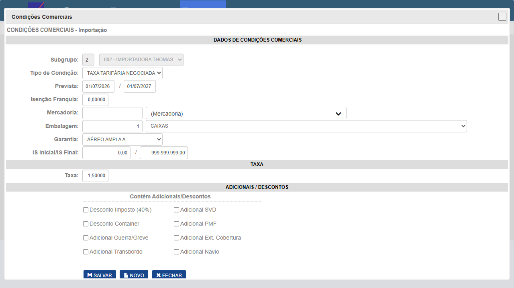
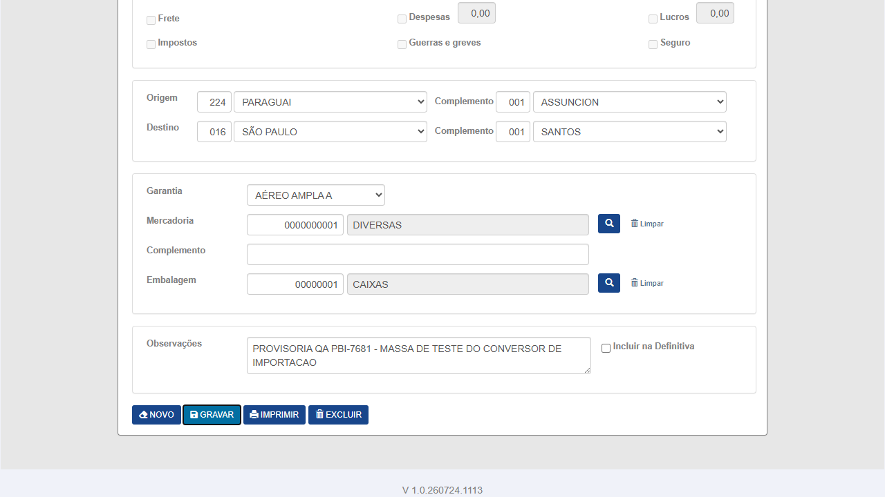
Ponto a investigar no CT-CIM-017: o prêmio gravado pelo conversor foi R$ 5,50 tanto no subgrupo 2 (com a CC de taxa negociada 1,5) quanto no subgrupo 3 (sem CC), com f_cml_bsc_vgm = 0,01 nos dois. Ou seja, a taxa negociada aparentemente não foi aplicada — pode ser porque a CC está amarrada à garantia 14 e a averbação do conversor usou outra, ou porque o tipo TXRSG exige configuração adicional. Precisa ser confirmado no CT-CIM-017 (lançamento manual com conferência do prêmio na tela) antes de virar defeito.
20260001 vigente no subgrupo 1 da apólice 1910 (data de saída dentro da validade dela).Objetivo
Item 7 da lista do PO — "validar motor de cálculo do ramo IMPORTAÇÃO, porque foi necessário otimizar esse ponto". O prêmio calculado pela UI (caminho não-cacheado, uma averbação por vez) é a referência contra a qual o prêmio gravado pelo conversor (caminho cacheado) será comparado no CT-CIM-009.
Passos
- Internacional → Averbação → Importação → Definitiva.
- Pesquisar a apólice
1910na base; informar a provisória20260001; clicar em próxima averbação. - Preencher com exatamente os mesmos valores da massa do conversor (é o que torna a comparação válida): data de movimento
07/2026, data de saída10/07/2026, FOB 55.000,00 moeda220(USD), País224/CplASSUINCION· Estado16/Cpl6, transporte A com garantia básica A, mercadoria DIVERSAS (código 1), peso200, embalagem CAIXAS (código 1), veículoNAVIO. - Antes de gravar: capturar screenshot com o campo de Prêmio calculado visível e legível, junto da Taxa aplicada e da IS.
- Extrair via
browser_evaluateo valor exato dos campos Prêmio, Taxa e IS. - Gravar e capturar a mensagem de sucesso; anotar o número da averbação definitiva gerada.
Resultado Esperado
Resultado Obtido
Averbação definitiva 2026000041 lançada manualmente na apólice 1910 / subgrupo 2 / provisória 20260001, com exatamente os mesmos dados da massa do conversor (FOB 55.000,00 USD, país 224/ASSUNCION, estado 16, transporte A, mercadoria DIVERSAS, embalagem CAIXAS).
| Caminho | Garantia | Taxa comercial | IS | Prêmio |
|---|---|---|---|---|
| Tela (cálculo não-cacheado) | 3 | 0,01000 | 55.000,00 | R$ 5,50 |
| Conversor (cálculo cacheado + BulkCopy) | 3 | 0,01000 | 55.000,00 | R$ 5,50 |
Valores idênticos. O refactoring não alterou o resultado do motor de cálculo — que é o que o CA de paridade exige e o que o PO pediu ao mandar "validar o motor de cálculo do ramo IMPORTAÇÃO".
Fecha o ponto que ficou em aberto no ciclo anterior: a suspeita de que a condição comercial de taxa negociada não estaria sendo aplicada não se confirmou como defeito. A taxa vem da garantia: com garantia 3 a taxa é 0,01 (prêmio R$ 5,50) e com garantia 14 é 0,158 (prêmio R$ 86,90) — verificado trocando a garantia na mesma tela. O conversor usou garantia 3, e a CC cadastrada era para garantia 14, então ela nunca deveria mesmo se aplicar. A comparação anterior era entre garantias diferentes, não entre caminhos de cálculo.
Validações de negócio observadas e corretas no caminho da gravação (três confirmações encadeadas): "Garantia selecionada diferente da garantia da averbação provisória", "Valor Segurado maior que o LR (US$ 1.000,00)" e "Este embarque ultrapassa o limite do acúmulo de risco da apólice para o veículo NAVIO".
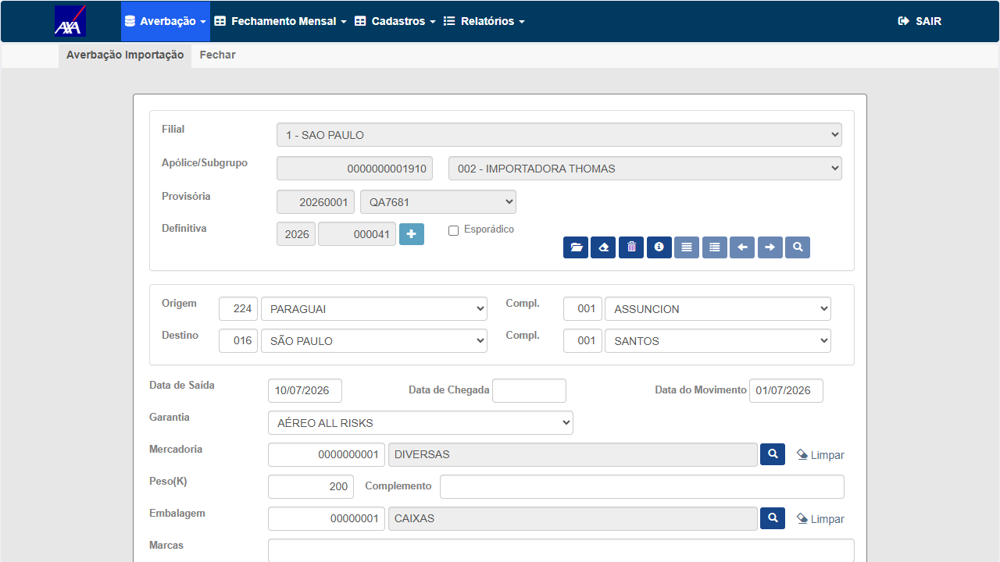
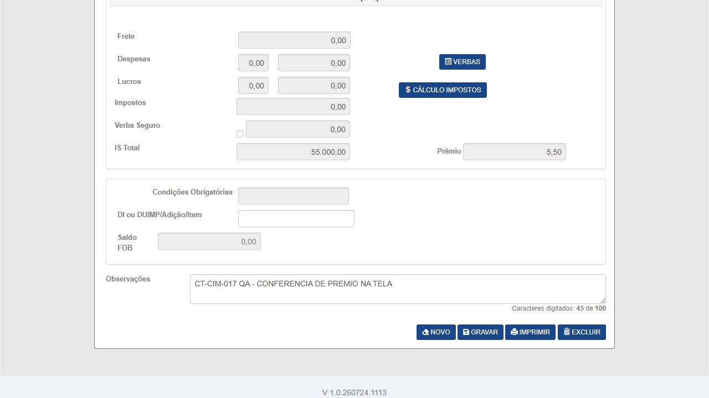
Objetivo
Item do PO: "conferir prêmio na impressão da averbação" — garantir que o valor exibido na tela é o mesmo impresso no documento entregue ao cliente.
Passos
- Na averbação gravada no CT-CIM-017, acionar a impressão da averbação.
- Salvar o arquivo gerado (PDF) em
evidencias/CT-CIM-018/e registrar nome e tamanho. - Abrir o arquivo e localizar o campo Prêmio (e a Taxa, quando impressa).
- Comparar com o valor capturado na tela no CT-CIM-017.
Resultado Esperado
Resultado Obtido
Arquivo gerado e validado: DEF-0000000001910-002-2026000041.xlsx ·
9.650 bytes · aba AverbacaoDefinitiva · 63 linhas.
| Campo no arquivo | Célula | Valor | Confere com a tela? |
|---|---|---|---|
| Valores Segurados | C43 / C55 | 55.000,00 | ✓ |
| Prêmio | G43 / G55 | 5,50 | ✓ |
| Observações | B57 | CT-CIM-017 QA - conferencia de premio na tela | ✓ |
O documento entregue ao cliente traz o mesmo prêmio da tela e do conversor.
Arquivo anexado como evidência (ct018-impressao-averbacao-2026000041.xlsx) — conforme a regra de que CT de impressão tem o próprio arquivo como evidência obrigatória.
Objetivo
Item do PO: "realizar a emissão da prévia e validar se os valores apresentados (Prêmio e Taxa) nos relatórios" — cinco relatórios, dois deles em duas versões de módulo (Internacional e Gestão).
Passos
- Internacional → Fechamento Mensal → Prévia.
- Pesquisar apólice
1910/ filial1/ ramo Importação; informar mês/ano de referência 07/2026. - Para cada relatório abaixo: selecionar, clicar em Exportar, salvar o arquivo em
evidencias/CT-CIM-019/e validar Prêmio e Taxa no conteúdo:- Resumo de Embarques
- Relação de Embarques
- Relação de Embarques Simplificado
- Análise de Produção — módulo Internacional e módulo Gestão
- Relatório de Produção — módulo Internacional e módulo Gestão
- Conferir que o Prêmio somado dos relatórios bate com a soma das averbações do período no banco.
Resultado Esperado
Resultado Obtido
Prévia emitida para apólice 1910 / subgrupo 002 / referência 07/2026.
Gerou o pacote 0000000001910-07-2026.zip (48.258 bytes) com os três relatórios:
| Relatório | Arquivo | Linhas | Totais |
|---|---|---|---|
| Relação de Embarques | EMB-IMP-…xlsx (43.785 b) | 748 | 41 embarques · IS 2.255.000,00 · Prêmio 225,50 |
| Relação Simplificada | EMB-SIMP-IMP-…xlsx (11.839 b) | 93 | 41 embarques · 2.255.000,00 · 225,50 |
| Resumo de Embarques | RESUMO-IMP-…xlsx (8.316 b) | 23 | IS 2.255.000,00 · Prêmio Comercial 225,50 · Prêmio Mínimo 967,74 · Prêmio Líquido 967,74 |
Consistência aritmética conferida: 41 averbações × R$ 5,50 = R$ 225,50 ✓ e 41 × 55.000,00 = 2.255.000,00 ✓ — batem nos três relatórios e com o valor unitário da tela e da impressão. O Prêmio Líquido de 967,74 é o prêmio mínimo do subgrupo sendo aplicado por ser maior que o prêmio comercial apurado — regra de negócio correta, não divergência.
Cada linha da Relação Simplificada traz Prêmio 5,50 e IS 55.000,00, com origem PARAGUAI/ASSUNCION e destino SÃO PAULO — coerente com a massa.
Escopo restante deste CT: Análise de Produção e Relatório de Produção (módulos Internacional e Gestão) não puderam ser gerados na etapa de prévia — a tela é "Produção da Emissão e Cancelamento de Faturas" e só tem dados após o fechamento. Ficam para o CT-CIM-021.
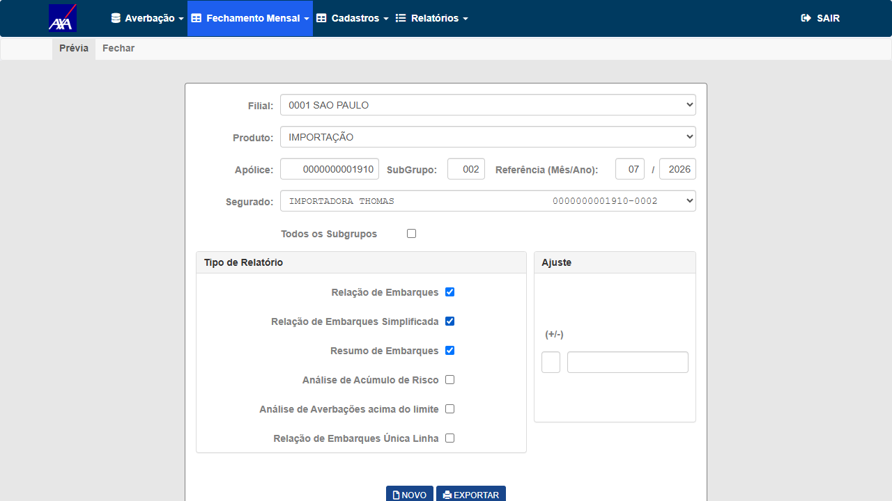
Pacote anexado como evidência: ct019-previa-relatorios.zip.
Objetivo
Item do PO: "efetivar o fechamento e conferir se os valores apresentados na tela Fechamento estão corretos".
Passos
- Internacional → Fechamento Mensal → efetivar o fechamento da apólice
1910/ filial1/ referência 07/2026. - Antes de confirmar: capturar screenshot dos valores apresentados (Prêmio total, IS, quantidade de averbações).
- Confirmar a efetivação e capturar a mensagem de sucesso.
- Comparar os valores da tela de Fechamento com os valores conferidos na prévia (CT-CIM-019).
Resultado Esperado
Resultado Obtido
Fechamento efetivado por Apólice/SubGrupo (escopo restrito à massa do teste): apólice 1910 / subgrupo 002 / referência 07/2026.
| Campo | Tela de Fechamento | Prévia (CT-CIM-019) | Fatura gravada | Confere? |
|---|---|---|---|---|
| Importância Segurada | 2.255.000,00 | 2.255.000,00 | 2.255.000,00 | ✓ |
| Prêmio Comercial | 225,50 | 225,50 | 225,50 | ✓ |
| Prêmio Mínimo | 967,74 | 967,74 | — | ✓ |
| Prêmio Líquido / Total | 967,74 | 967,74 | — | ✓ |
| Qtd. averbações | 41 | 41 | 41 | ✓ |
Efetivação confirmada em banco: as 41 averbações saíram de tb_mov_avb_int_cit (movimento aberto)
e passaram para tb_cme_avb_int_cit sob a fatura nº 522, referência 202607, com
IS total 2.255.000,00 e prêmio comercial total 225,50 — os mesmos valores da prévia e da tela.
Data de vencimento gerada: 05/08/2026.
Observação cosmética (não impede a aprovação): a tela de Fechamento exibe o Prêmio Mínimo e o Prêmio Líquido
sem arredondamento — 967,7419354838709677419354839 (27 casas decimais) em vez de 967,74.
Nos relatórios o valor sai corretamente formatado. Vale um ajuste de apresentação.
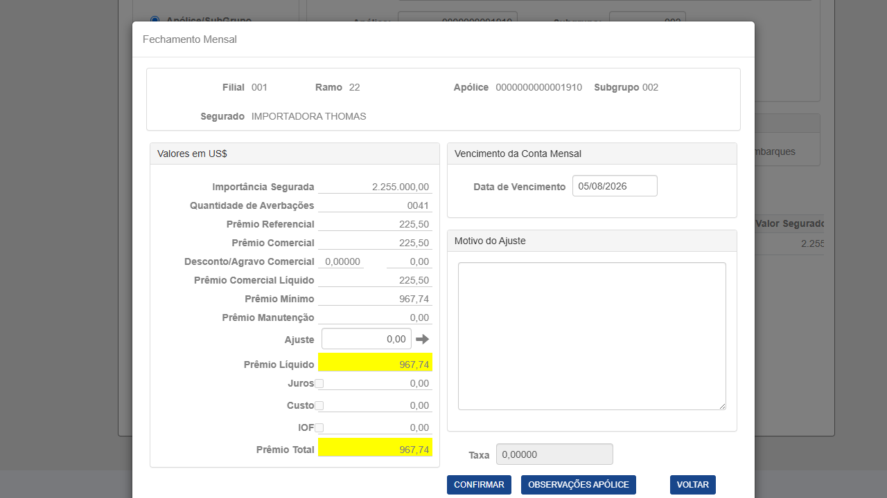
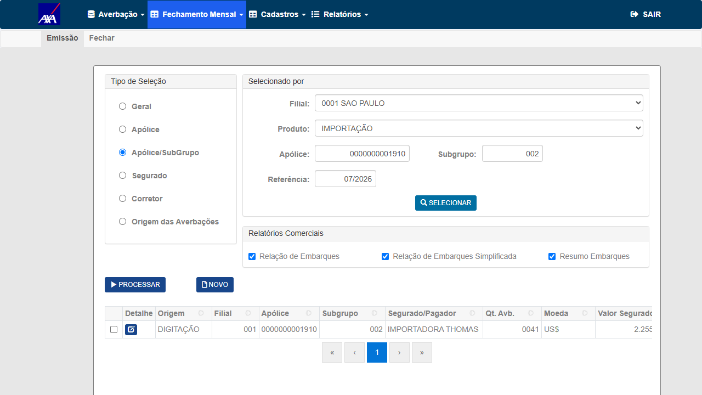
Objetivo
Último item do PO: "após o fechamento, conferir se os valores estão corretos no relatório" — a mesma bateria de relatórios, agora pela via de Impressão (pós-fechamento), para garantir que o fechamento não alterou os valores.
Passos
- Internacional → Fechamento Mensal → Impressão.
- Selecionar critério de filial, filial
1, ramo Importação/Exportação → Selecionar → escolher a fatura do período fechado na grade. - Exportar, salvar em
evidencias/CT-CIM-021/e validar Prêmio e Taxa nos mesmos relatórios do CT-CIM-019: Resumo de Embarques, Relação de Embarques, Relação de Embarques Simplificado, Análise de Produção (Internacional + Gestão), Relatório de Produção (Internacional + Gestão). - Comparar cada valor com o correspondente da prévia (CT-CIM-019) e da tela de Fechamento (CT-CIM-020).
Resultado Esperado
| Critério de aceite | CT(s) |
|---|---|
| Conversão (cache de mercadoria) não altera o resultado do parsing | CT-CIM-001 |
| Gravação via SqlBulkCopy quando indicativo ativo | CT-CIM-002, 003 |
| Paridade funcional (Aceitas + Rejeitadas idênticas ao linha-a-linha) | CT-CIM-002 |
| Corretude de valores (prêmio ≠ 0, país/estado/navio/mercadoria) | CT-CIM-001, 009 |
| ≥ 7.000 registros sem timeout + throughput > baseline linha-a-linha | CT-CIM-003, 004 |
| Concorrência sem serialização + progresso SignalR isolado por token | CT-CIM-005 |
| Falha no BulkCopy → nenhuma averbação perdida (atomicidade/transação) | CT-CIM-006 |
| Indicativo inativo → regressão zero | CT-CIM-007 |
| Escalável / multi-seguradora sem código específico | CT-CIM-008 |
| Motor compartilhado (CLSINTCALC) não regride RCTR-VI/Exportação | CT-CIM-010 |
Critérios adicionados pelo PO (Fabiola Costa, 24/07/2026) — cada item da lista mapeado ao CT que o cobre:
| Exigência do PO | CT(s) |
|---|---|
| Melhora de performance do processamento > 60% vs. produção | CT-CIM-011, 012, 013, 014 |
| Arquivo com registros para a mesma apólice — tempo + qtd | CT-CIM-011, 013 |
| Arquivo com registros para apólices distintas — tempo + qtd | CT-CIM-014 |
| Mesma quantidade da seguradora: 40 e 3 registros, com tempos | CT-CIM-011, 012 |
| 7.000 mesma apólice × 7.000 múltiplas apólices — performance cai ou mantém? | CT-CIM-013 vs. 014 |
| A partir de quantos registros dá timeout | CT-CIM-015 |
| Dois usuários da mesma companhia convertendo/processando em paralelo | CT-CIM-005 |
| Motor de cálculo do ramo IMPORTAÇÃO | CT-CIM-009, 017 |
| Apólice IMPORTAÇÃO + CC taxa negociada + subgrupo | CT-CIM-016 |
| Averbação — prêmio na tela | CT-CIM-017 |
| Averbação — prêmio na impressão | CT-CIM-018 |
| Prévia — Prêmio e Taxa nos 5 relatórios (Análise/Relatório de Produção em Internacional + Gestão) | CT-CIM-019 |
| Fechamento — valores corretos na tela | CT-CIM-020 |
| Pós-fechamento — mesmos 5 relatórios conferidos | CT-CIM-021 |
- Atomicidade insert+delete (Alto):
BeginTransactionausente antes do loop foi um bug real corrigido no caminho — se regredir, há perda de averbação. Mitigação: CT-CIM-006 bloqueante. - Corretude de valores (Alto): prêmio zerado e país/estado/navio/mercadoria incorretos foram bugs reais durante a refatoração do cálculo cacheado. Mitigação: CT-CIM-001 (mercadoria) + CT-CIM-009 (prêmio/campos), comparando cache vs. 1ª ocorrência e vs. linha-a-linha.
- Motor compartilhado CLSINTCALC (Alto): cache novo + parâmetro na cadeia compartilhada com RCTR-VI/Exportação. Mitigação: CT-CIM-010 (regressão dos irmãos) + parâmetro opcional default null por design.
- Concorrência / progresso SignalR (Médio): isolamento por token foi corrigido; risco de contaminação de progresso/dados entre execuções simultâneas. Mitigação: CT-CIM-005 (2 processos, barrier).
- Performance dependente de repetição (Médio): combinação nova ainda custa ~2,5–2,9s/reg; um arquivo real com baixa repetição pode não render o ganho esperado. Mitigação: medir a taxa de repetição real (CT-CIM-004) e validar com o arquivo de produção.
- Massa de ≥ 7.000 registros (Baixo — resolvido): apólice, provisória, data de saída e a especificação posicional completa do layout foram levantadas e validadas em tela em 30/07 (apólice
1910, provisória20260001); gerador reescrito (gerar_massa_importacao_v2.py). Resta apenas resolver a numeração do CONTADOR. - Divergência de valor entre prévia e fechamento (Alto): o motor de cálculo de Importação foi otimizado; se o valor cacheado divergir em qualquer ponto da cadeia, o cliente recebe relatório com prêmio errado. Mitigação: CT-CIM-017 a 021 comparam o mesmo prêmio em tela → impressão → prévia → fechamento → pós-fechamento.
- Tempo de execução dos CTs de volume (Médio): 7.500 registros a ~0,8–2,9 s/reg significam de 1,5 h a 6 h por rodada de processamento. Mitigação: executar 40/3 registros primeiro (resposta rápida ao critério do PO) e os volumes grandes em sequência, reportando parcialmente.
- Comentário técnico da Andreia (20/07/2026) no #7681 — implementações e ganhos de performance (fonte primária deste plano).
- PRs
#1379(feat) e#1381(fix) — merge emhmlem 20/07/2026. Task filha#7748(Done). - PBI #7471 (RCTR-VI, produto 30) — precedente da otimização BulkCopy; critério de perf. herdado (aposentado aqui) e suíte de automação reaproveitável.
- Comentário da Fabiola Costa (24/07/2026) no #7681 — tempos de produção (ramo 0622), critério oficial de > 60% de ganho no processamento e a lista de cenários exigidos: fonte primária do Grupo 3 ampliado (CT-CIM-011 a 015) e do Grupo 6 (CT-CIM-016 a 021).
- Refinamento técnico da Andreia (07/07) e comentários de DoR (Wesley 06–10/07) no próprio #7681.
- Tasks de defeito abertas e fechadas durante a homologação: #7888 (502 no Selecionar Layout) e #7905 (500 no Converter) — ambas Done e confirmadas por retest em 30/07.
- Consulta ao banco
smt-hom-citweb-axaem 30/07/2026 —tb_apo_int_cit,tb_sgp_cit,tb_sgp_int_cml_cit,tb_mov_avb_int_cit: origem do box "Massa confirmada". - Caminhos de menu validados em
features/Internacional/—Fechamento Mensal/Previa.feature,Fechamento Mensal/impressao.feature,averbacao/importacao/AverbacaoImportacao.feature,Cadastros/Apolice/importacao.feature.
| Data | O que mudou |
|---|---|
| 16/07/2026 | Versão inicial — 8 CTs, critério de performance herdado do #7471 (≥ 0,5 s/reg). |
| 20/07/2026 | Revisão após o refinamento técnico da Andreia: a Conversão também mudou (cache de mercadoria); threshold fixo aposentado; 10 CTs. |
| 23–29/07/2026 | Execução iniciada. CT-CIM-001 reprovado por 502 (Task #7888) e depois por 500 no Converter (Task #7905) — ambas corrigidas pela dev. |
| 30/07/2026 execução | Execução dos CTs de performance do PO: massa de Importação resolvida do zero pelo QA (apólice, provisória, data e a especificação posicional completa do layout) e CT-CIM-011 / 012 executados com medição de tempo. Resultado: processamento de 40 registros em 23,8 s contra 9 min em produção — 95,6% de ganho, muito acima da meta de 60% do PO; 15 averbações gravadas com prêmio ≠ 0. Achado aberto: o CONTADOR de averbação definitiva reinicia em 1 e colide com o histórico da apólice. |
| 30/07/2026 plano | Revisão do plano: (1) CT-CIM-001 → APROVADO com as evidências do retest; (2) incorporado o critério oficial do PO de > 60% de ganho e os tempos de produção; (3) 11 CTs novos (CT-CIM-011 a 021) cobrindo a lista completa da Fabiola de 24/07 — volumes 40/3/7.000 mesma apólice e múltiplas apólices, limite de timeout, motor de cálculo e fluxo de negócio até o pós-fechamento; (4) massa de Importação levantada e validada — apólice 1910, provisória 20260001, data de saída 10/07/2026 e a tabela posicional completa do layout. Total: 21 CTs. |